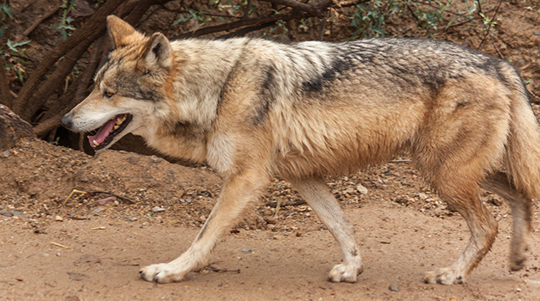

Animales en peligro de extincion
Pie de página
Lobo gris mexicano: la situación de esta especie es más que crítica. Hace 40 años fue declarado especie en peligro de extinción. Pese a los esfuerzos por su conservación, ya ha desaparecido por completo en su hábitat natural.

Pie de página